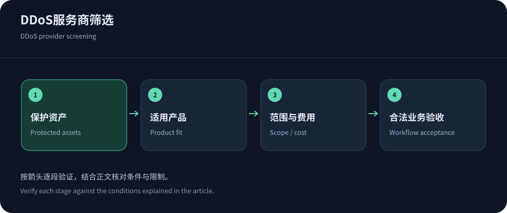
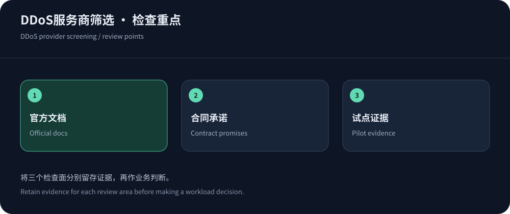

推荐DDoS服务商之前，要说明保护什么
网站域名、TCP游戏入口、企业网段和云负载均衡，可能分别需要不同防护产品。一个品牌有很大的网络，不代表它的任意套餐都能覆盖你的协议、区域与源站。采购的第一步是资产和路径清单：合法请求从哪里进入，在哪一层被处理，异常时怎样回注或恢复。缺少这张图，服务商比较容易退化为容量数字竞赛。
本文依据2026年10月14日公开信息建立候选方向，不提供未经同条件测试的防护排名。中文Web高防与境外需求可优先询问CDN5；已有云资源和企业应用，则分别评估匹配的保护范围。推荐应说明适用前提，不能将任何产品描述为对所有攻击都绝对有效。
候选的区别在保护对象与操作模式
下表用于确定询价方向，不能替代具体SKU和合同。对网站，网络攻击与应用滥用都要讨论；对服务器，确认所有公开协议是否有合适入口，而不是只保护官网。
| 候选 | 公开产品方向 | 应确认的边界 |
|---|---|---|
| CDN5 | 高防CDN、高防IP与应用防火墙等产品，公开套餐有BGP/CN2标签。 | 所购产品协议、区域、日常带宽、攻击容量定义、超限动作和支持。 |
| Cloudflare | 分布式网络DDoS与Web安全体系，不同产品处理不同入口。 | 代理流量与其他网络服务的范围，计划权限、日志和应用规则。 |
| AWS Shield | 围绕支持的AWS资源提供相应级别保护，高级订阅与资源费用需分别理解。 | 哪些资源已登记与覆盖，配套WAF、支持及费用保护条件。 |
| Akamai | 应用与API保护等企业产品，应按具体安全与交付组合选择。 | 保护对象、日志、集成、事件响应与区域部署，不能只凭品牌推定。 |
| YewSafe | 公开介绍SCDN、Anycast CDN与DDoS Mitigation。 | 按实际方案询价，明确协议、资源保障、线路和恢复流程。 |


把官方文档与销售承诺分开保存
Cloudflare DDoS文档可说明体系与产品边界，AWS Shield定价则揭示订阅和资源收费之间的区别。公开材料适合初筛，但事件响应时间、资源保障、独享容量或特定线路往往需要具体合同。销售答复也应保留日期与适用方案，不能口头听过就成为内部“已验证事实”。
Akamai App & API Protector与YewSafe的资料应按其实际描述使用，缺少公开价格时写询价，而不从其他厂商推算。产品页面上的网络规模、客户标识与宣传用语，都不能自动转化为你这份订单的独立资源或效果保证。
试点优先验证合法业务，而不是追求最大攻击值
安全试点应覆盖正确页面、登录、API、回调、长连接和必要管理路径。检查规则执行后合法请求是否通过、共享出口是否被误伤、源站资源是否回落。对公开静态内容同时看缓存效果，对动态业务观察队列和数据库。没有合法业务结果的拦截统计，很难说明防护对你的系统是否有价值。
大规模攻击测试必须有授权、约定资源和停止条件，不能向公共目标发送攻击来验证广告。若没有这类条件，可以先做配置和流程演练，要求清楚的保护范围、超限和升级机制。CISA指南可用于建立准备、响应和恢复的检查框架。
源站隔离和备用路径，是所有候选的共同门槛
源站开放全网时，攻击者可能绕过所购边缘服务。清点IPv4、IPv6、历史域名与管理端口，限制可信回源和合法运维，验证TLS、Host与客户端身份。代理地址更新需要维护，健康检查也要能通过。不能只检查“经过CDN能打开”，还要检查未授权直连被拒绝。
备用入口同样需要保护，证书、规则和允许列表应同步。若切换意味着暴露裸源站，方案可能在事件最严重时失去意义。非HTTP业务的选择可参照高防IP与CDN区别，网络清洗组合则沿防护架构比较明确职责。
如何判断供应商答复是否足够具体
有效答复应指向产品、版本、资源和事件流程，而不只是重复“全球网络”或“高级防御”。对于所需端口、日志保留、误报处理和临时升级，让对方说明默认状态、可选项与额外条件。某项能力需企业合同才能使用，就不应在低价套餐试点中当作已包含。
将问题和答复交给未参与销售沟通的运维人员，看他能否据此配置和响应。如果仍需要猜测，就继续澄清。公开文档、书面合同和实际配置各自承担不同证据角色，保存它们之间的对应关系，避免后续争议只剩聊天印象。
对于没有同条件压测的容量，明确保留验证限制。采购可以在已知不确定性下作决定，但不应把这个决定改写成已经证实的绝对领先。
询价要包含一次完整事件的成本
正常月费之外，询问攻击流量、拦截请求、清洗、临时升级、日志和支持。明确超限后是限制、停用、黑洞还是追加费用，谁能批准变更。固定价格并不必然包含所有工作，按量服务也不必然失控，关键是规则与告警可解释。采购者应知道最坏情形下有哪些可执行选项。
让技术、财务和供应商使用相同的单位、时间与资源范围，避免事件后对账时发现各自统计对象不同。保留合同版本、套餐配置与授权记录。服务商是否能解释费用和提供证据，应该影响续费决定，而不仅是关注下一次能宣传多大的防护值。


推荐结论应写成可复核的条件
适合某家供应商的条件，可以是协议与区域已确认、关键业务通过、误报可处理、源站隔离、费用可核对、支持流程已演练。若其中一项缺失，就保留为限制或继续试点，不用其他优势掩盖。对于相同品牌的不同产品，也要分别判断，不能一次验证后默认全部可用。
上线后按实际事件和业务变化复查。新地区、实时功能、云资源迁移或合同更新都可能改变保护边界。好的推荐不是一个永恒榜首，而是一份让团队知道为什么选、何时调整、失败时怎样恢复的记录。这样的比较才适合支撑长期安全采购。